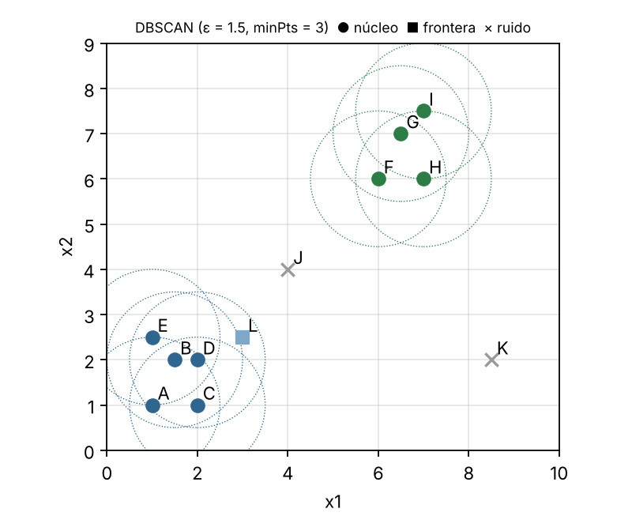

Guía para pasar en limpio (la tarea se entrega a mano). Verificada numéricamente. Rafael Ortega de la Paz · 420054085.

1. Gráfica. Se ven dos grupos: uno abajo a la izquierda (A–E, con L cerca) y otro arriba a la derecha (F–I). J (4,4) y K (8.5,2) quedan aislados.
Distancias que se descartan a simple vista: entre los dos grupos, |Δx| ≥ 3 o |Δy| ≥ 3 ⇒ d > 1.5. J está a ≥ 1.80 de todos (más cercano: L, √(1²+1.5²) = 1.80). K está a ≥ 4 de todos en x1 salvo H/F/I, donde |Δx2| ≥ 4. Basta con que |Δx| o |Δy| > 1.5 para descartar.
2. Distancias calculadas (≤ 1.5):
| Par | A-B | A-C | A-D | A-E | B-C | B-D | B-E | C-D | D-E | D-L |
|---|---|---|---|---|---|---|---|---|---|---|
| d | 1.118 | 1.000 | 1.414 | 1.500 | 1.118 | 0.500 | 0.707 | 1.000 | 1.118 | 1.118 |
| Par | F-G | F-H | G-H | G-I | H-I |
|---|---|---|---|---|---|
| d | 1.118 | 1.000 | 1.118 | 0.707 | 1.500 |
Casi entran pero no (> 1.5): B-L 1.581, C-E 1.803, C-L 1.803, F-I 1.803, J-L 1.803, E-L 2.000. Ojo: A-E y H-I valen exactamente 1.5 y sí cuentan (d ≤ ε).
| p | Nε(p) | |N| | Tipo |
|---|---|---|---|
| A | {A,B,C,D,E} | 5 | núcleo |
| B | {A,B,C,D,E} | 5 | núcleo |
| C | {A,B,C,D} | 4 | núcleo |
| D | {A,B,C,D,E,L} | 6 | núcleo |
| E | {A,B,D,E} | 4 | núcleo |
| F | {F,G,H} | 3 | núcleo |
| G | {F,G,H,I} | 4 | núcleo |
| H | {F,G,H,I} | 4 | núcleo |
| I | {G,H,I} | 3 | núcleo |
| J | {J} | 1 | ruido |
| K | {K} | 1 | ruido |
| L | {D,L} | 2 | frontera (no es núcleo, pero está en N(D) y D es núcleo) |
3–4. Clústeres:
1. A priori: Sí = ejemplos 1,2,3,4,5,10 → 6; No = 6,7,8,9 → 4. P(Sí) = 6/10 = 0.6, P(No) = 4/10 = 0.4.
2. Verosimilitudes:
| Atributo = valor | P(· | Sí) | P(· | No) |
|---|---|---|
| Asistencia = Alta | 5/6 | 1/4 |
| Asistencia = Baja | 1/6 | 3/4 |
| Tareas = Completas | 4/6 | 1/4 |
| Tareas = Incompletas | 2/6 | 3/4 |
| Horas = Muchas | 4/6 | 1/4 |
| Horas = Pocas | 2/6 | 3/4 |
No hay ceros, así que no hace falta suavizado de Laplace.
3. x1 = (Baja, Completas, Muchas)
Sí: 0.6 · (1/6)(4/6)(4/6) = 0.6 · 16/216 = 0.04444
No: 0.4 · (3/4)(1/4)(1/4) = 0.4 · 3/64 = 0.01875
Normalizando (suma 0.06319): P(Sí|x1) = 0.703, P(No|x1) = 0.297 ⇒ x1 → Aprueba (Sí).
x2 = (Alta, Incompletas, Pocas)
Sí: 0.6 · (5/6)(2/6)(2/6) = 0.6 · 20/216 = 0.05556
No: 0.4 · (1/4)(3/4)(3/4) = 0.4 · 9/64 = 0.05625
Normalizando (suma 0.11181): P(Sí|x2) = 0.497, P(No|x2) = 0.503 ⇒ x2 → No aprueba (decisión muy cerrada).
P(Aprueba) = 5/8 = 0.625 · P(Reprueba) = 3/8 = 0.375. Varianza muestral s² = Σ(x−x̄)²/(n−1).
| Clase | x̄ sueño | s² sueño | x̄ promedio | s² promedio |
|---|---|---|---|---|
| Aprueba (n=5) | 35/5 = 7 | (0+1+1+0+0)/4 = 0.5 | 43/5 = 8.6 | (0.01+0.16+0.36+0.81+0.36)/4 = 0.425 |
| Reprueba (n=3) | 15/3 = 5 | (0+1+1)/2 = 1 | 20/3 = 6.667 | (0.444+0.694+0.028)/2 = 0.583 |
f(x) = 1/√(2πσ²) · exp(−(x−μ)²/(2σ²)), con x = (6.5, 7.5):
| f(sueño = 6.5) | f(prom = 7.5) | P(c)·f·f | Posterior | |
|---|---|---|---|---|
| Aprueba | 0.4394 | 0.1474 | 0.625·0.4394·0.1474 = 0.04048 | 0.743 |
| Reprueba | 0.1295 | 0.2880 | 0.375·0.1295·0.2880 = 0.01399 | 0.257 |
Si en clase se usó la varianza poblacional (÷ n): s² = 0.4, 0.34 (Aprueba) y 0.667, 0.389 (Reprueba); el resultado sigue siendo Aprueba (0.789 vs 0.211). Usa la convención del profesor.